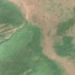
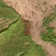

1,3 ha · Almașu
văzută schimbată prima dată pe 5 aug. 2026


Nu am găsit nicio autorizație de tăiere în jur.
Terenul: în afara amenajamentelor silvice publicate (pășune, mal de apă sau pădure privată fără amenajament în registru).
Ce se vede în poze: În poza detaliată din 2021, zona marcată era acoperită de pădure deasă, iar în «înainte» era verde. În «după» apare un dreptunghi brun-roșcat, care se deosebește de pădurea verde din jur, ceea ce arată că arborii au fost probabil tăiați.